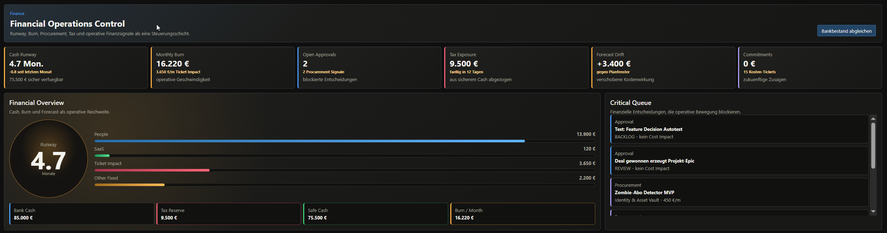

Company OS verbindet operative Ausführung, finanzielle Realität und organisatorischen Kontext in einem gemeinsamen System.

Kleine Firmen führen 8–12 Tools parallel. Menschen werden zur manuellen Integrationsschicht — und das skaliert nicht.
„Wo steht meine Firma gerade?"
Sieben Tabs. Keine Sicht. Keine Priorität.
Mit Company OS →
Eine Ansicht. Eine operative Wahrheit. Alles aus dem gleichen Datenmodell — ohne einen einzigen Tab mehr.
Vier Bausteine, ein zusammenhängendes Modell. Kein weiteres Tool — eine operative Infrastruktur.
Jedes Ticket trägt Department, Kostentreiber, Owner und Runway-Impact. Strukturell verbunden — nicht nachträglich verlinkt.
Tickets, Docs, CRM, SOPs, Kosten und Mitarbeiter teilen ein Datenmodell. Kontext entsteht durch Struktur, nicht durch Suche.
Reasoning-Modelle können erstmals operative Realität interpretieren — wenn diese strukturiert vorliegt. Company OS liefert die Schicht.
Cash, Burn, Tax und Runway als Signal-Pills. Nicht in einem Report — als operative Wahrnehmungsschicht über jeder Entscheidung.
Cash, Burn und operative Entscheidungen in einem Datenmodell — kein Report, kein Tab.
Jedes Tool löst sein Problem isoliert. Company OS verbindet die Probleme — weil sie im echten Betrieb auch verbunden sind.
| Linear | Notion | ERP / DATEV | Company OS | |
|---|---|---|---|---|
| Tickets & Arbeit | ✓ | — | — | ✓ |
| Dokumente & Wissen | — | ✓ | — | ✓ |
| CRM & Forecast | — | — | teils | ✓ |
| Runway als Live-Signal | — | — | Report | Live |
| Mitarbeiter, Assets, Vault | — | — | teils | ✓ |
| Gemeinsames Datenmodell | — | — | — | ✓ |
| AI-lesbarer Kontext | — | — | — | Native |
Kleine Firmen, die schnell wachsen, leiden bereits unter Fragmentierung. Entscheider: Founder oder COO.
Du willst dein Wissen aus dem Kopf bringen — sodass die Firma auch ohne dich einen Tag funktioniert.
Mehrere Kundenprojekte parallel, knappe Marge, klare Lieferung. Tickets müssen mit Kosten und Pipeline reden.
Produkt und Firma gleichzeitig bauen. Beides darf sich nicht gegenseitig verschlucken.
Jira plus Notion plus HubSpot plus DATEV plus Slack. Keine einheitliche Wahrheit, viel Doppelarbeit.
Company OS entstand nicht aus einem Marktforschungs-Workshop — sondern aus dem echten Aufbau von Decode IT.
Daniel Sobiak · Decode IT
During operational work inside fast-moving startup environments, one problem became visible again and again.
Teams moved faster than their operational structure. Execution lived across tickets, chats, spreadsheets, documents and people's heads. Der Founder war die einzige Integrationsschicht — hielt alles manuell zusammen.
Company OS entstand aus der Idee, dass operative Realität selbst eine bessere Strukturschicht braucht.
Kein weiteres Tool. Ein anderes Modell.
Philosophy
Mehr Tools reduzieren keine Komplexität — sie fragmentieren sie weiter. Struktur reduziert Komplexität. Tools folgen der Struktur.
Reasoning-Modelle können interpretieren und handeln — aber nur wenn die Daten darunter Form haben. Company OS baut diese Schicht.
Jedes Ticket ist eine Kostenentscheidung. Jede Einstellung beeinflusst den Runway. Jede Verzögerung hat ein finanzielles Signal. Das ist dasselbe System.
Wenn eine Person das operative Bild im Kopf hält, skaliert die Firma nicht — sie nimmt sich selbst in Geiselhaft.
Warum Jetzt
Eine neue Generation baut mit AI von Anfang an — und braucht operative Struktur, die AI lesen kann.
Die durchschnittliche 10-Personen-Firma führt 8–12 Tools. Kein gemeinsames Datenmodell. Kein gemeinsamer Kontext.
Runway-Klarheit, Execution-Sichtbarkeit und Governance sind von Nice-to-have zu Mindestanforderungen geworden.
Geschwindigkeit ohne Struktur erzeugt operativen Debt. Je schneller du dich bewegst, desto mehr brauchst du ein System.
LLMs können nicht auf operative Realität handeln, wenn diese nicht strukturiert ist. Die Schicht unter AI ist wichtiger als AI selbst.
Background
Strukturierung von Prozessen, Rollen und Verantwortlichkeiten in wachsenden Organisationen.
Operative Arbeit in schnell wachsenden Startups. Das Chaos von innen erlebt — und strukturiert.
Einblick in das globale Startup-Ökosystem. Muster in erfolgreichen Gründer-Strukturen erkannt.
Entwicklung strukturierter operativer Systeme. Das Fundament für Company OS.
Das System, das wir selbst gebraucht hätten. Gebaut im echten Betrieb. Nicht im Workshop.
Company OS macht aus Tickets, Wissen, Kunden, Mitarbeitern und Kosten ein steuerbares Unternehmen.
Aktuell in früher Produktphase. Entwickelt mit echtem Firmenbetrieb als Grundlage.